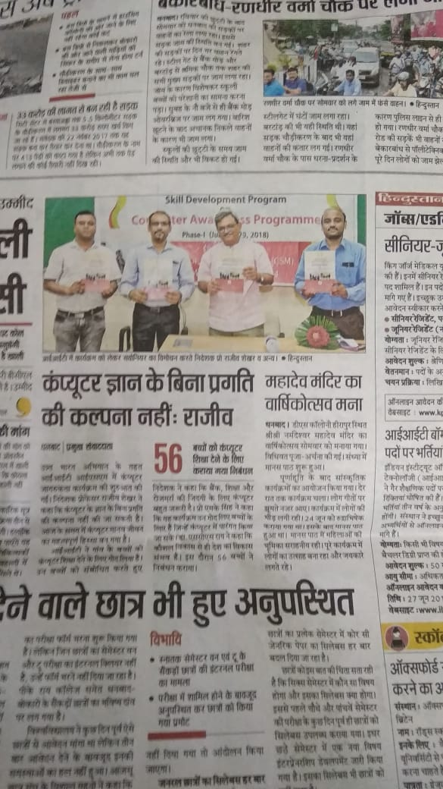
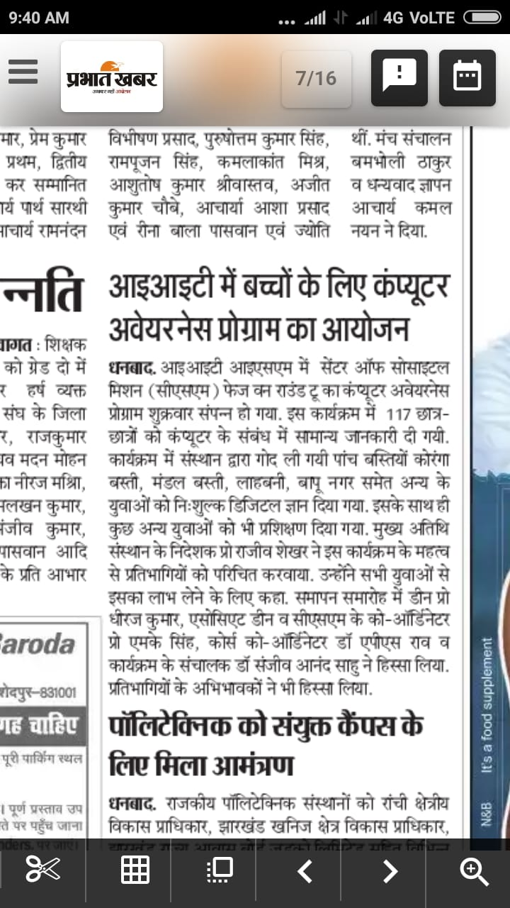
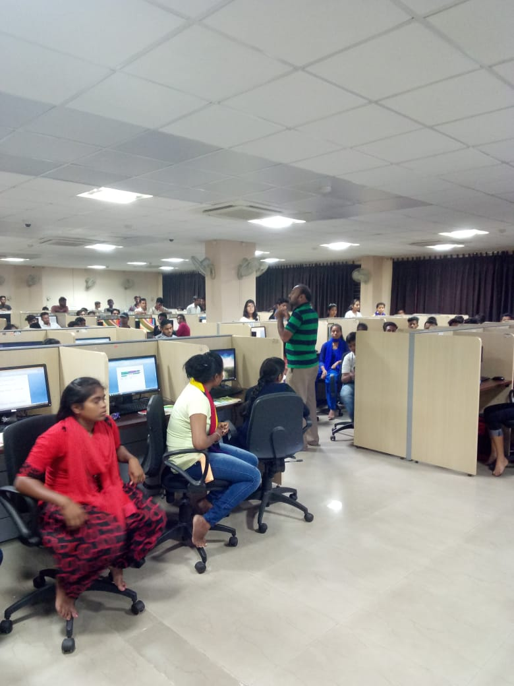

Skill Development Program on
Computer Awareness Programme
In the presence of Chief Guest "Prof Rajiv Shekhar Director IIT ISM Dhanbad" Skill Development Program on Computer
Awareness Programme PHASE-1 was conducted succesfully. Imparting the knowledging in young minds and creating awareness about practical knowledge of computer and its
wider applications was the main objective which was achieved.
CENTRE OF SOCIETAL MISSION(CSM)
Phase-2 (August 20-24,2018)

Phase-2
Computer Awareness program

Lecture on Operating System Role
Computer Awareness Progam Coordinator Dr ACS Rao teaching about role of Operating System and Softwares in a Computer.
CENTRE OF SOCIETAL MISSION(CSM)
(August 27-31,2018)